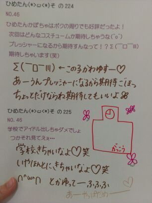

| 2012/12 14 Fri | ひめたん(*>ω<*)そ の242 |

あのね
春頃に一瞬ハマったアロマキャンドルを
久々に引っ張りだしてみたら
なんかほっこりしたわず
ほんのりバニラの香りがして
なんだかちょっとだけ
おしゃれな雰囲気かもしだしてたわず
キャンドルナイトしたわず
わず(*・ω・*)わずわず
なんだか昨日はいっぱーい寝た
お昼寝したうえに夜もはよ寝たー
あんましお腹も空かんかったけどね
でねあのね
いくちゃん (生田絵梨花chan)と
おんなしタイミングでおんなし時間だけ
お昼寝してたのー！
14時くらいに一瞬mailしてて
そっからお互い寝ちゃったみたいで
17時とかに起きてから
「ごめん寝てたー」て打ったら
「あたしもー」ってなった＊
おはよー＼(^^)／
で、そっから
いくちゃんの夜ごはんまで
ずーっとmailしてましたとさ。
zeppライブが終わったら
ろってぃー (川村真洋chan)と
カラオケいく予定(｀・ω・´)びば!
ううー寒いいいー

 最近聞いた曲で好きな曲とかあったら教えて？
最近聞いた曲で好きな曲とかあったら教えて？
NMBさんの「北川謙二」が頭から離れん＼(^^)／
最近ならback numberさんの「青い春」、
GReeeeNさんの「雪の音」とかも好きー♪
落ち込んだり、気持ちを持ち上げる時に聴く曲はありますか？
落ちるときは奈落の底まで落ちてしまいたい人のでね(´。・ω・。｀)てへ
そゆ時はGReeeeNさんの「涙空」とか
bumpさんの「涙のふるさと」とか
しっとりバラード系をリピートしてるとスッキリしてくるかなー
歌詞もいいのよねこれがねっ
ひめたんは山口県の光市って知ってる？
聞いたことあるよー！
山口は広島のお隣さんー♪
あっしは結構女の子と話すのが苦手で、握手会でも話したいことの半分位しか話せないんだよね〜。これってなにか解決方法あるかな〜!?
あっし...かっくいー響きだねー
えーどうなんだろうかー
話すときに相手の目をみて話せば緊張しないんじゃないかな！
びーむ(<・ω・>)
コートを買おうと思ってるんだけどなかなか色が選べない。ひめたんは何色がいいと思う？
ひめたんは紺のダッフル買ったよー
キャメルとかも可愛いよね！
いまテラスハウスとかいう番組やってるけどルームシェアとかしてみたいですか？
ルームシェアは楽しそうだけど、
ひめたんお片付けできない人なので
お相手さんが辛たんかもしれない(´;ω;`)
放送部なんですけど、どうしたら番組制作が上手くなりますか？
おおー応援するぞ後輩さんよ＼(^^)／
何だろうね。ひめたんは制作ってかアナウンスの声だけ参加してたから、いいアドバイスあげられるかわからんけど
一番は、学生さんにとって身近な、共感できる話題選びが大事だと思う。
あとはテレビだからこそ演出できる効果ってのがあるだろうから、そーゆのを上手く活用することかな。
ただインタビューするだけじゃなくて
自分たちが求めてる答えをしてくれるだろうなーって人を取材することも大切よー
ふぁいとー♪♪
綺麗な写真を撮るにはどうすればいい（＾ω＾）？
根気よくいろんな角度、いろんなパターンで撮ってみたらどうかしら？
あとはあれだね、愛だよ愛(∀)きゃ
 握手の時のひめたんはＵＭ（上目ｗ使い）ＮＫ（なつき）ＭＯ（見送り）の技がありますがＴＧ技も持っています。
握手の時のひめたんはＵＭ（上目ｗ使い）ＮＫ（なつき）ＭＯ（見送り）の技がありますがＴＧ技も持っています。
さて、ＴＧはどんな技でしょうか？ 分かるかな？？
な、なんじゃそりゃー( ・ω・ノ)ノ
[T...ときどき G...がっついてくる]はー？
いやーそんながっついてないけどさっ
その...ねっ///

(＊´・ω・＊)ひめたん
コメント(121)
2012/12/14 10:06